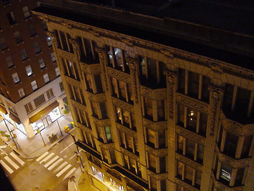
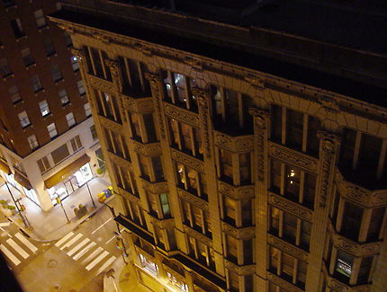

Philadelphia
In August we traveled to Philadelphia for a weeks worth of shooting. Although we didn’t find much brotherly love, we did find a lot to love about Ben Franklin’s old home, From the amazing 30th Street Station to a turn of the century brothel, we cover it all.
Li Europan lingues es membres del sam familie. Lor separat existentie es un myth. Por scientie, musica, sport etc, litot Europa usa li sam vocabular. Li lingues differe solmen in li grammatica, li pronunciation e li plu commun vocabules.
Omnicos directe al desirabilite de un nov lingua franca: On refusa continuar payar custosi traductores. At solmen va esser necessi far uniform grammatica, pronunciation e plu sommun paroles.
Ma quande lingues coalesce, li grammatica del resultant lingue es plu simplic e regulari quam ti del coalescent lingues. Li nov lingua franca va esser plu simplic e regulari quam li existent Europan lingues. It va esser tam simplic quam Occidental in fact, it va esser Occidental.
A un Angleso it va semblar un simplificat Angles, quam un skeptic Cambridge amico dit me que Occidental es. Li Europan lingues es membres del sam familie. Lor separat existentie es un myth. Por scientie, musica, sport etc, litot Europa usa li sam vocabular. Li lingues differe solmen in li grammatica, li pronunciation e li plu commun vocabules. Omnicos directe al desirabilite de un nov lingua franca: On refusa continuar payar custosi traductores. At solmen va esser necessi far uniform grammatica, pronunciation e plu sommun paroles.


 
